Session
Your 5-hour window: how much of it you've used, and how long until it resets.
Free · Open source · Windows 10 & 11
Cuota is a tiny Windows widget that shows your Claude plan's usage: the 5-hour session, the week, and each model's own limit. Same numbers as Claude Code's Account & Usage panel. And while Claude works, Clawd acts it out.
v1.1.0 · Cuota.exe · 12.1 MB · One portable file, nothing to install
Live demo · made-up usage
✻Percolating…
Clawd's own animations and words from the app, sped up. The usage is made up, like Cuota's --demo.
01 · The meters
Cuota reads the same usage Claude Code's Account & Usage panel shows and keeps it on your screen, with the time left until each limit resets.
Your 5-hour window: how much of it you've used, and how long until it resets.
Everything you've used this week, across Claude Code, chats and Cowork.
Some models have a weekly cap of their own, like Fable here. Each gets its own meter.
Meters turn amber at 75% and red at 90%, so you see trouble coming. In Cuota, hover one for its exact reset time.
Plenty left.
02 · Meet Clawd
Clawd, the Claude Code mascot, acts out a random activity while Claude works: a new one whenever a session starts working, and another every so often. He greets you as work starts and celebrates when it's done, waits around for a minute after, then falls asleep until there's work again.
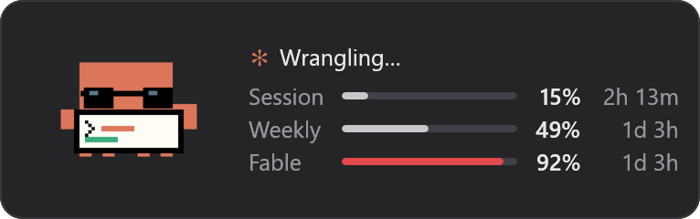
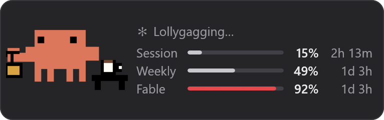
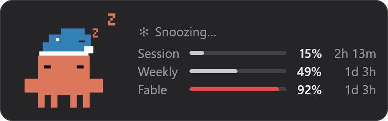
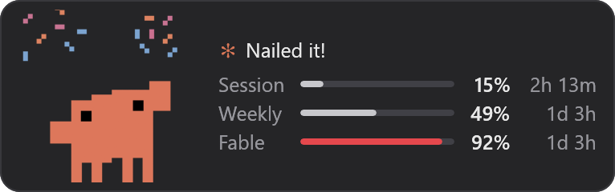
Above the meters, a line says what he's up to: a turning star, then Percolating…, Spelunking…, Flibbertigibbeting…, each new word typing itself over the last.
The animations come from Mascot Studio by Harriszed.
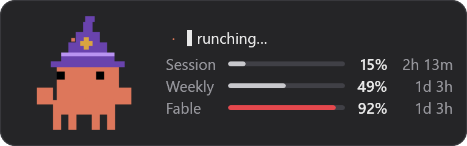
03 · Make it yours
Under Show as, pick one or more. Always on top and Desktop are the same panel, so only one of those two can be on.
Floats above all windows. Drag it to move it.
Sits behind your windows, like a desktop widget.
Clawd and each limit as icons by the clock. Click one for the panel.
Just Clawd, out on your screen with no panel around him.
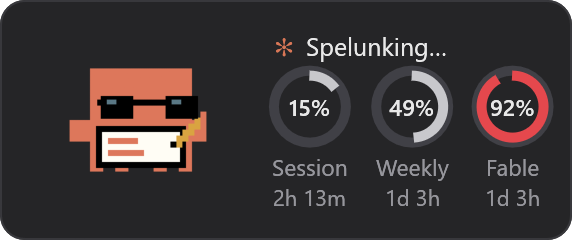
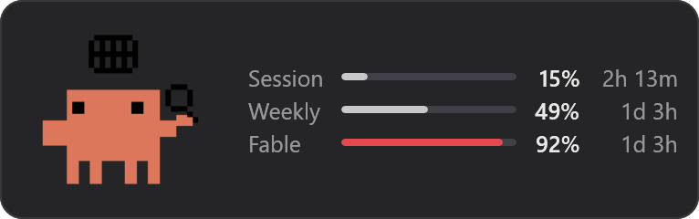
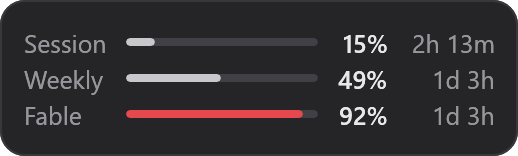
Ten steps from 70% to 160%. Pick one in settings, or turn the mouse wheel over the panel. Opacity is yours to set too.
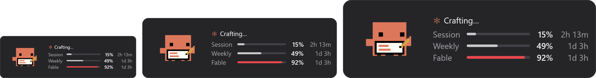
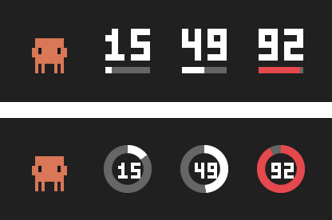
With Show as set to Taskbar, Clawd dances by the clock while Claude works, and each limit gets an icon, as Bars or Pie (enlarged here). Right-click any of Cuota's icons for its menu: Usage details, Settings and Quit.
04 · Desktop pet
Just Clawd, out on your screen with nothing around him, walking about and doing what Claude's doing, with what he's up to under him.
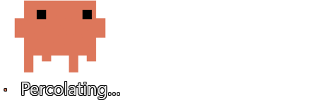
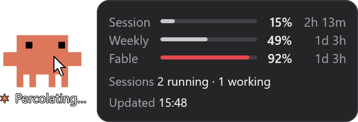
Psst. He's loose on this page too. Look at the bottom of your screen.
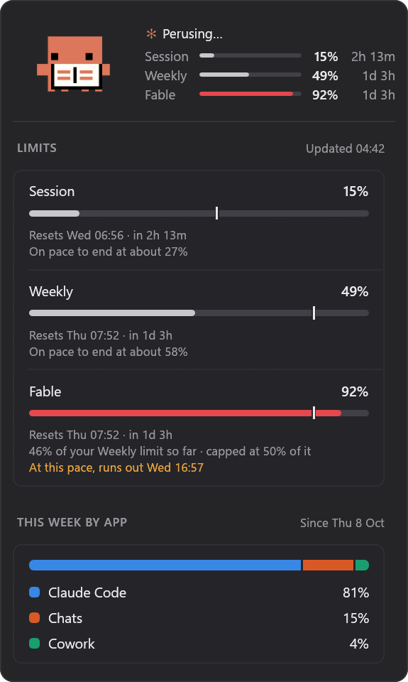
05 · Usage details
Double-click the panel to expand it, and again to shrink it. The details show:
Want some always in view? Pick them on the Details page of settings: they show under the meters all the time, in the order you drag them into. Double-click can also open your usage page on claude.ai, the Claude app, or any file, program or script you pick.
06 · 8-bit sounds
Little 8-bit tunes, made in code like an old console's pulse, triangle and noise channels. Normal plays only what matters. Lively adds a sound for each kind of step Claude takes. They keep quiet while the screen is locked, a game runs full screen or you're presenting.
07 · Settings
Right-click the panel, or Clawd. Like Windows 11's Settings, it has a page for each part.
Show as, what a double-click does, Move aside for the pointer, and Start with Windows.
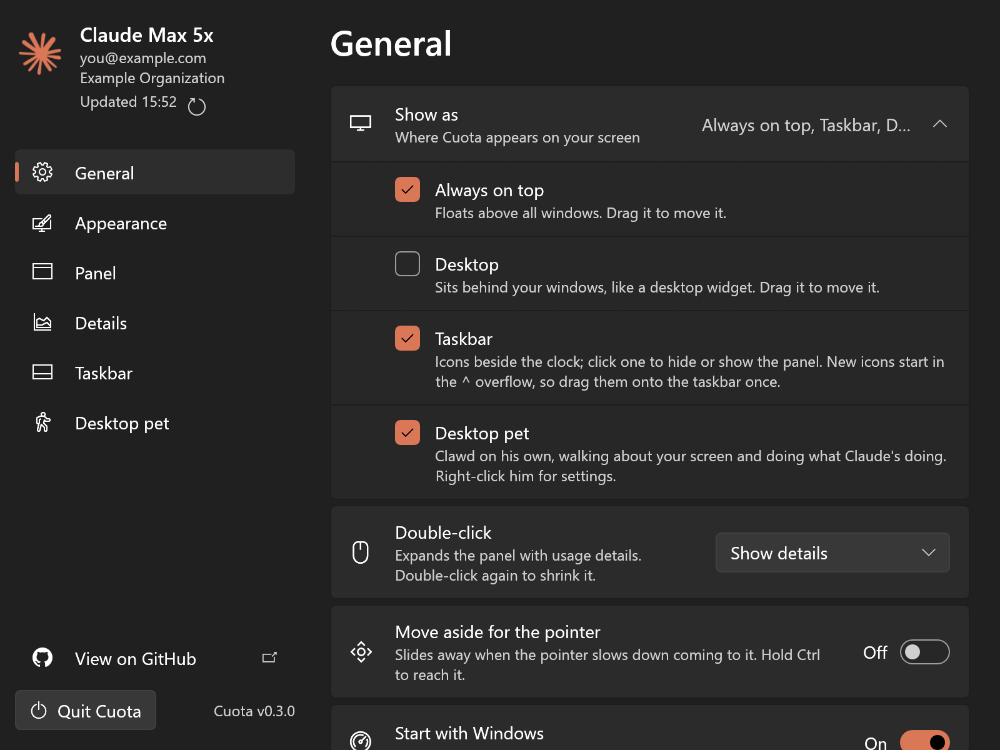
The panel's size and opacity, Clawd's animation, and the 8-bit sound effects, with a list that plays each one so you can learn them.
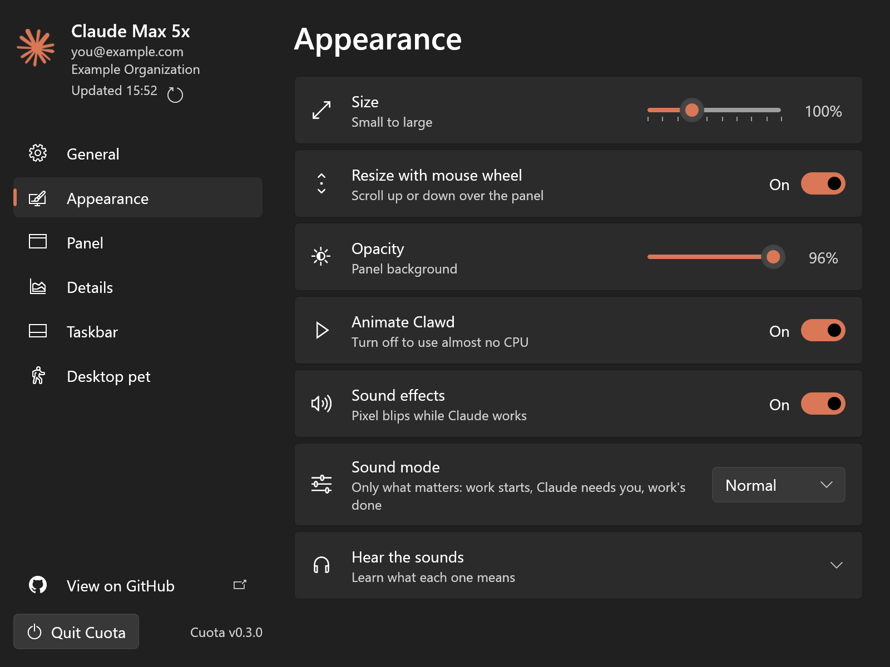
What the panel shows: Bars or Pie, which limits, percentage, time left, and Clawd, with or without his status line.
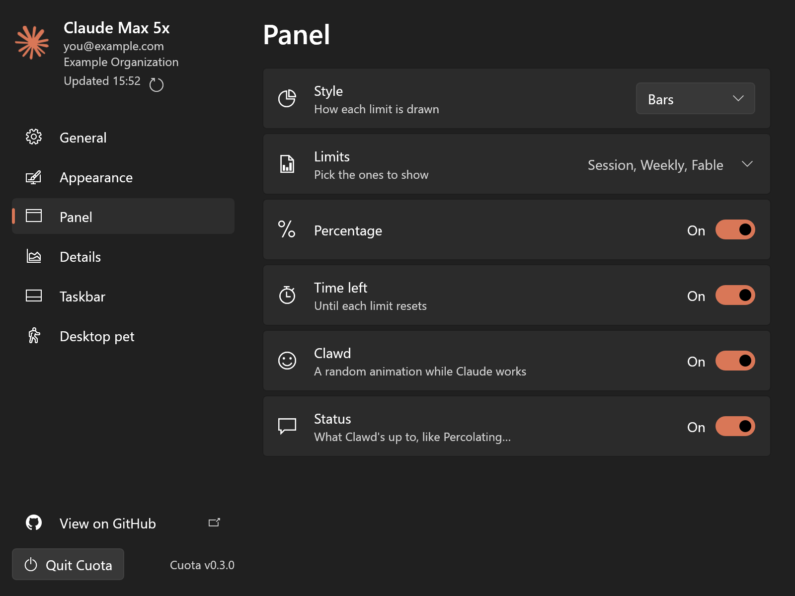
The same choices for the icons by the clock: Bars or Pie, which limits, percentage, time left and Clawd.
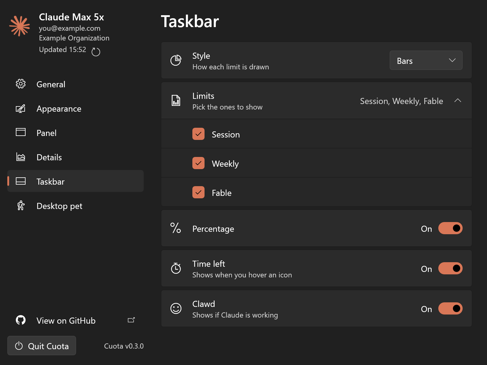
His size, his status line, React to pointer, and the card that shows when you rest the pointer on him.
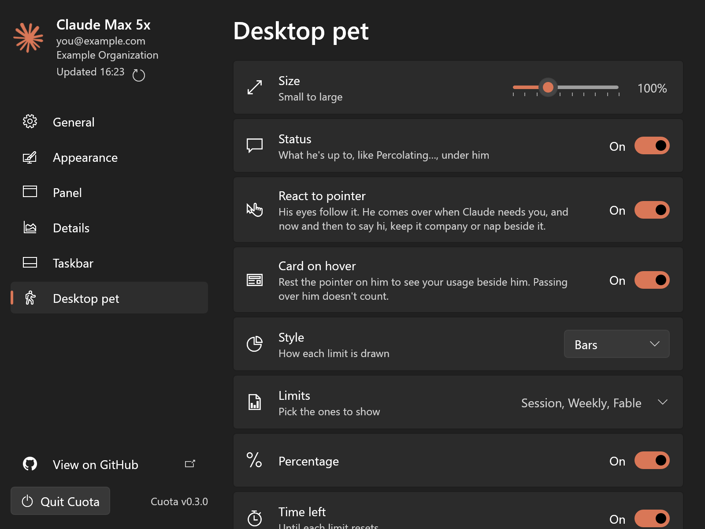
08 · How it works
Cuota reuses the login Claude Code already has, asks Anthropic for your usage, and keeps everything else on your PC.
Easy on the API. About one call a minute while Claude is working, one more when it stops, and none while it's idle. The Refresh button still asks. It also reuses usage Claude Code already fetched.
Heads up. The usage endpoint is undocumented, so a Claude update could break it.
%USERPROFILE%\.claude\.credentials.json (or CLAUDE_CONFIG_DIR, or CLAUDE_CODE_OAUTH_TOKEN).api.anthropic.com/api/oauth/usage, the same endpoint Claude Code uses. The token goes only to Anthropic.%USERPROFILE%\.claude\projects, only while they're showing. They stay on your PC.%APPDATA%\Cuota\settings.json.%LOCALAPPDATA%\Cuota\Logs\cuota.log, kept under 1 MB, leaving out your email and what your sessions are about.09 · Get it
Grab Cuota.exe from the latest release. There's nothing to install, so keep it anywhere.
It's unsigned, so if Windows says it protected your PC, click More info, then Run anyway.
Have Claude Code logged in with Pro or Max. Cuota reuses that login, so there's nothing to set up.
v1.1.0 · Windows 10 & 11 · All releases
You'll need Rust. The exe is self-contained, so copy it anywhere.
> git clone https://github.com/arshit09/Cuota > cd Cuota > cargo build --release > .\target\release\cuota.exe
| Flag | Does |
|---|---|
--interval 120 | Refresh every 120 s while Claude is in use (default 60, min 30) |
--demo | Show made-up data, like the screenshots on this page |
--once | Print usage to the terminal and exit |
10 · Questions
No. Cuota is an unofficial project. It isn't made, endorsed or supported by Anthropic, and has no affiliation with Anthropic.
No. Cuota's code is free software under the GNU GPL v3.0 or later: you can use it, change it, share it and even sell it, as long as you share the source code too.
It only asks Anthropic's usage endpoint for your numbers. It never sends messages to Claude, and your session transcripts never leave your PC.
No, Cuota is for Windows 10 and 11.
Send a message in Claude Code. Cuota picks up the new token within 15 seconds.
Run claude, then /login.
Cuota backs off on its own. If it keeps happening, try a longer --interval.
New icons start in the overflow. Click ^ by the clock and drag the Cuota icons onto the taskbar.
Open Settings › General › Log file to see what Cuota ran into, and attach cuota.log to an issue.
One small file. Your limits, always in view.